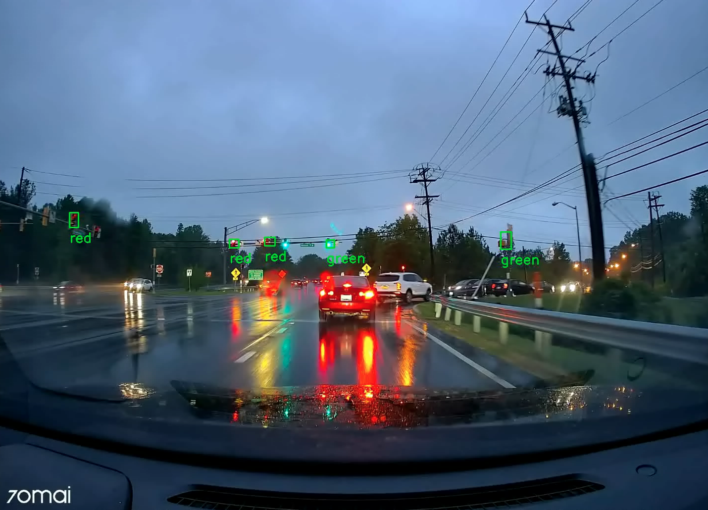
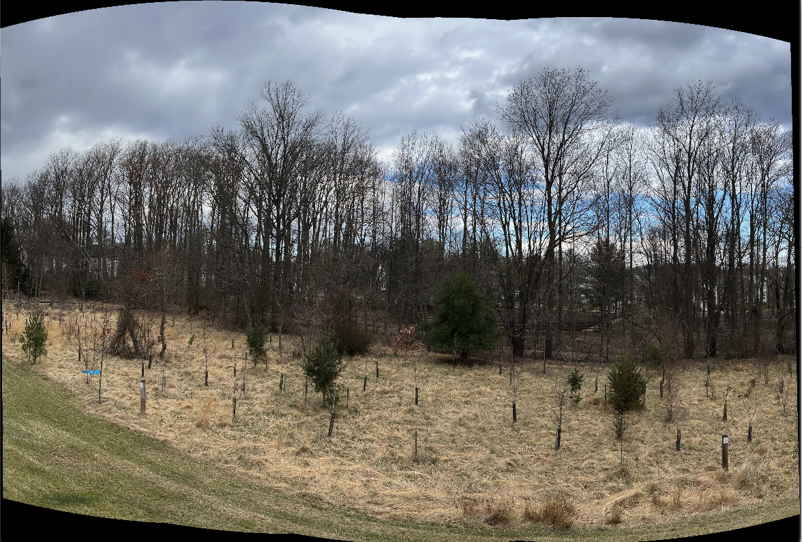
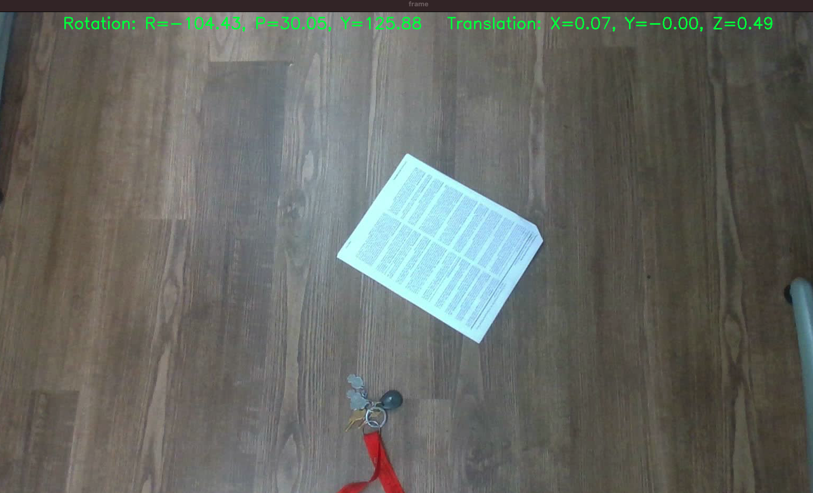
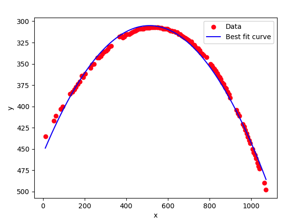
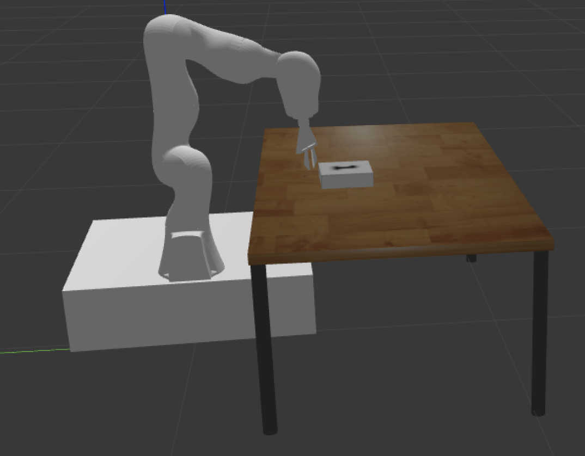

About me
Hello! I'm Kiran Ajith, a passionate Robotics enthusiast based in College Park, Maryland. I'm currently pursuing my Professional Master of Engineering in Robotics at the University of Maryland.
My passion lies in leveraging software engineering principles to develop innovative solutions in the field of robotics. Throughout my academic journey, I have immersed myself in the fascinating world of robotics, exploring cutting-edge technologies, and solving complex problems to create innovative solutions. My goal is to bring together my technical expertise and creativity to drive robotics technology forward, solving complex problems, and creating impact in real-world applications. I am actively seeking opportunities in Robotics Software Engineering where I can contribute my skills and continue my professional growth.

The project focuses on automating the kitting task in the ARIAC (Agile Robotics for Industrial Automation Competition) competition conducted by the National Institute of Standards and Technology. It involves identifying the correct trays and parts to to be picked up by a UR3 robotic arm and placing it on trays which is then transported by an Autonomous Guided Vehicle (AGV).

A real-time traffic light detection system using YOLOv3 and colour thresholding, implemented
in a variety of lighting and weather conditions, enhancing safety in autonomous driving applications.
Gesture Recognition using Machine Learning

Developed an LSTM model to train a self-created dataset
that predicts American Sign Language (ASL) using Tensorflow.
Panoramic Image Sticting using openCV

A pipeline involving SIFT feature extraction, brute-force feature matching, outlier removal using RANSAC and computation of homography to stict four images to create a panoramic image

This project applies pose estimation using homography on a video of a sheet of paper to determine the rotation and translation between the camera and a reference point on the paper. The process involves several steps such as noise reduction, edge detection, line detection, and homography. These steps use various techniques like Gaussian filtering, Canny edge detection, Hough transformation, and matrix calculations to process and analyze the video.
Ball Tracking and Trajectory Analysis using Computer Vision

Analyzing a video of a red ball being thrown against a wall. The trajectory of the ball is assumed to follow the equation of a parabola. The goal is to detect and plot the pixel coordinates of the center point of the ball in the video, fit a curve to the extracted coordinates using Standard Least Squares, and predict the x-coordinate of the ball’s landing spot.
Simulation of a Kuka Mobile Robot

Modelled a kuka robotic arm on a mobile base using solidworks.Estimated the forward and inverse kinematics, verified it using MATLAB's petercorke toolbox. Simulated a pick and place application using ROS Noetic in Gazebo.
Autonomous Aerial Robotic System

Worked with UROC in learning to build , fly and verify an autonomous aerial robotic system.